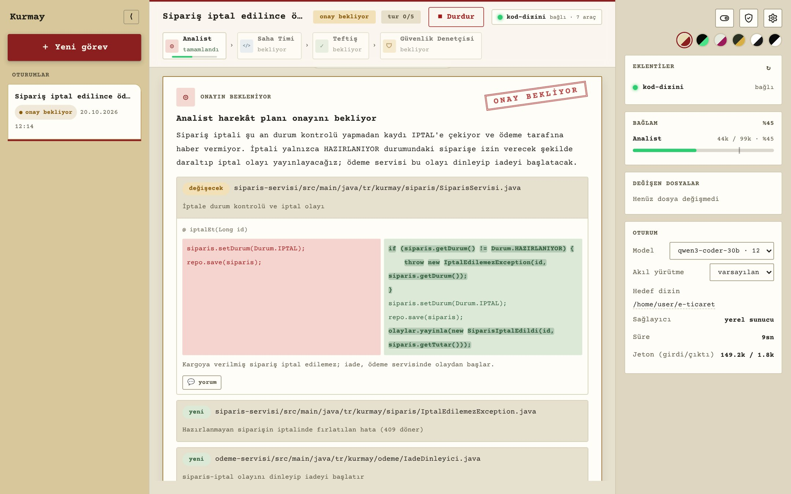
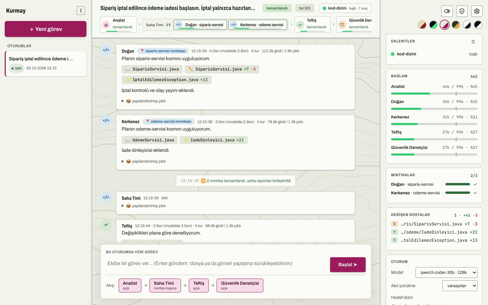
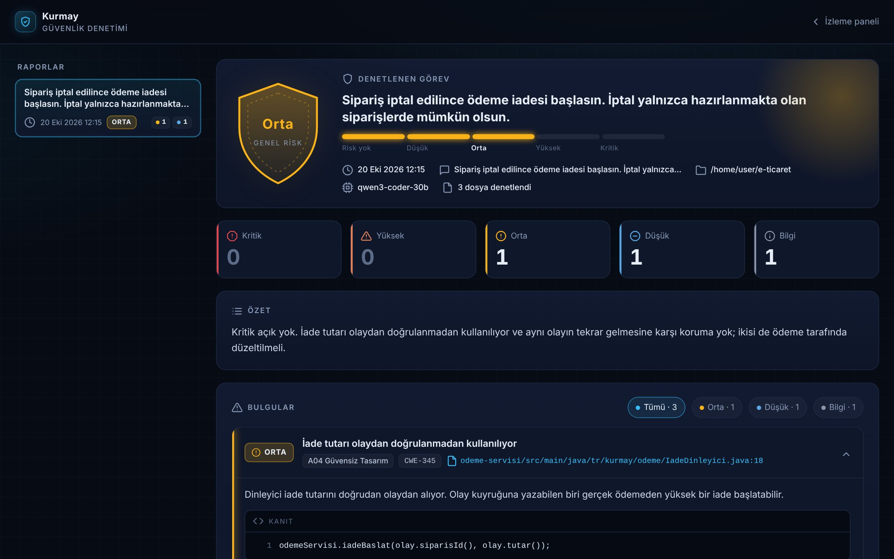

Analist
Planlama
- Görevi
- Görevi ve kodu okur, dosya dosya harekât planı çıkarır: hangi dosya, nerede, önce ve sonra hali. Soru sorduysan plan yerine cevap ve kaynak yazar.
- Sınırı
- Dosya yazamaz. Salt okunur kapısı yazma girişimini durdurur.
Yazılım işini bir yapay zekâ heyetine ver. Analist planlar, sen onaylarsın, Saha Timi uygular, Teftiş denetler. Hangi ajanın ne zaman çalışacağına model değil, kod karar verir.
config.json
Durum
Bir modele “planla, kodu yaz, kontrol et, bitince diğerini çağır” dediğinde adım atlar, sırayı karıştırır ya da kendi yazdığı kodu kendisi onaylar. Yerel modellerde bu daha da sık olur. Kurmay geçişleri modele bırakmaz: her ajan yalnızca kendi işini yapar, sıradaki adımı orkestratör seçer.
Akış
Kimin ne zaman çalışacağı, red gelince nereye dönüleceği ve kaç tur deneneceği orkestratörde yazılı. Model talimatı unutsa da akış unutmaz.
Roller
Her ajanın talimatı .claude/agents/ altında bir md dosyası. Ayarlar sayfasından düzenlenir, sıradaki görevde geçerli olur.
Ayarlar
Sağlayıcı, model, hedef dizin, akış şeması ve sınırlar config.json'da durur. Panelden değiştirdiğin her şey oraya yazılır.
Görev
Her rolün açık bir görevi ve aşamayacağı bir sınırı var. Sınırları talimat metni değil, kod ve koruma kapıları uygular.
Planlama
Uygulama
Atmaca · Doğan · Şahin · Kartal · Kerkenez · Turna…
Denetim
Güvenlik incelemesi
İcra
Görevi panele yazarsın. Kod değişikliği hiçbir zaman senin onayın olmadan başlamaz; onayladıktan sonra akış kendi yürür ve her adımı panelde canlı görürsün.
Kesik kenarlı kutu isteğe bağlı adım. Kesik kırmızı oklar geri dönüş yolları.
Panelde yaz. Ekran görüntüsü yapıştırabilir, PDF ya da Word belgesi sürükleyebilirsin; belgenin metni çıkarılıp ajanlara verilir. İstersen görevi ileri bir saate zamanla.
Kodu okur, değişecek her dosya için nerede, önce ve sonra ne olacağını yazar. Varsayımlarını açıkça belirtir, sana soru sormaz.
Planı onayla, reddet ya da zamanla. Reddederken her değişiklik parçasına ayrı yorum yazabilirsin. İstersen dolu planlar onay beklemeden iletilsin.
Plan mıntıkalara bölünür, her mıntıkada bir saha ajanı yalnızca kendi dosyalarına yazar. Raporlar tek çıktıda birleşir.
Diskteki değişiklikleri plana göre okur. Reddederse sorun listesi yalnızca ilgili mıntıkalara geri gider.
Güvenlik denetimi açıksa değişen kod incelenir; risk düzeyi, bulgular, kanıt satırları ve öneriler ayrı bir sayfada toplanır.


İdari ve lojistik
Kurmay tek bir Node.js uygulaması. Kendi makinende ya da bir sunucuda çalışır, model olarak kendi sunucunu ya da bulutu kullanır.
$ npm install -g kurmay-ai $ mkdir kurmay-calisma && cd kurmay-calisma $ kurmay init $ kurmay serve
kurmay init çalışma klasörüne config.json ile rolleri, kuralları ve koruma kapılarını koyar. Panel http://localhost:4141 adresinde açılır. Paketi güncelledikten sonra kurmay update şablonları tazeler; senin değiştirdiğin dosyalara dokunmaz, yenisini .yeni uzantısıyla yanına koyar.
$ npm install $ npm run serve $ npm run serve -- --port 4242 # ikinci servis
$ cp .env.example .env # portu ve dizini yaz $ docker compose up --build
$ kurmay "Sipariş iptaline iade ekle" --at +30mGörev verilince Kurmay tek görev modunda çalışır ve bitince kapanır. --at başlangıcı erteler (+2h, +1d, "2026-11-03 09:00").
Claude Code tek bir isteği zaten 10 kez yeniden dener. Aşağıdakiler Kurmay'ın onun üstüne kattıkları; değerler Ayarlar'dan yeniden başlatmadan değişir.
| Durum | Kurmay ne yapar | Varsayılan |
|---|---|---|
| Claude Code'un denemeleri bitti, sunucu hâlâ meşgul | Bekler, bekleme süresini her denemede ikiye katlar, konuşmayı kaldığı yerden sürdürür; görevi baştan göndermez | 5 sn → en fazla 60 sn, sınırsız |
| Bağlam penceresi doluyor | Sıradaki görevden önce konuşmayı özetler, aynı oturumdan devam eder | %75 doluluk |
| Bağlam koşu ortasında doldu (vLLM'in hatası) | Önce özetler; yine dolarsa yeni konuşma açar | 2 kurtarma |
| Konuşma bozuldu ya da bulunamadı | Önceki görevlerin özetiyle yeni bir konuşma başlatır | kendiliğinden |
Sorular
Kurmay'ı ilk kez görenlerin sorduğu sorular ve kısa cevapları: Claude Code ile farkı, yerel model sunucusunda bağlam ve yanıt sınırları, Güvenlik Denetçisi.
Hayır. Kurmay, Claude Code'un motorunu kendi paketi içinden kullanır; işletim sistemine uygun çalıştırılabilir dosya paketle birlikte iner. npm install -g kurmay-ai yeterli. Kapalı ağda iç npm deposunda bu dosyanın paketi de bulunmalı.
Claude Code tek bir asistan; sırayı modelin talimatı hatırlamasına bırakır. Kurmay üstüne bir iş düzeni kurar:
Dener, ve konuşmayı sürdürmeyi de bilir: denemeler bitince terminalde “devam et” yazarsan kaldığı yerden sürer. Ama bunu başında biri yapmalı. Kurmay aynı şeyi gözetimsiz yapar: bekler, kendisi sürdürür, görevi tekrar göndermez. Gece başlatılan iş, sunucu yarım saat meşgul olsa da kimse dokunmadan biter.
Hayır. Tanımadığı her modeli 200 bin jetonluk sayar; aynı sunucuya bağlı terminaldeki Claude Code da elle söylenmedikçe bunu bilmez. Kurmay pencereyi sunucunun model listesinden okur ve her ajana kendisi verir.
Kurmay bu yüzden doluluğu kendisi izler: eşikte konuşmayı özetler, koşu ortasında dolarsa özetleyip sürdürür, olmazsa önceki görevlerin özetiyle yeni konuşma açar.
Olabilir. Claude Code her istekte en fazla 32 bin jetonluk yanıt ister. Düşünen bir model büyük bir plan yazarken bu sınıra takılırsa yanıt sessizce sürdürülür ve plan yarıda kalabilir. Kurmay artık bunu ajanın balonunda “yanıt sınıra takılıp kesildi” diye yazar, plan yarım geldiyse onay kartı da söyler.
Bağlam penceresi modele göre otomatik. Yanıta ayrılan pay otomatik değil, 32 bin; Ayarlar → Bağlam penceresi kartından artırılır (ör. 64 bin). Pay büyüdükçe girdiye kalan alan o kadar küçülür, çünkü sunucu girdiyle payın toplamını pencereyle kıyaslar.
Teftiş onayından sonra, yalnızca bu koşuda değişen dosyaları güvenlik çerçevesiyle (enjeksiyon, yetki, gizli bilgi, güvensiz yapılandırma…) inceler. Kod yazamaz; her bulguyu dosya, satır ve diskten aynen alınmış kanıtla yazar; akışı durdurmaz, rapor verir. Teftiş “plan doğru uygulandı mı” diye bakar; açık ise çoğu zaman doğru çalışan kodda gizlidir. Varsayılan kapalı, Ayarlar'dan tek dokunuşla açılır.
Denetçinin yakalaması beklenen tipik durumlar. Satırlar örnektir, gerçek bir rapordan alınmadı.
| Kodda gördüğü | Bulgu | Önerisi |
|---|---|---|
Sorgu metnine birleştirilen parametre ("… WHERE id=" + id) | SQL enjeksiyonu | PreparedStatement ya da JPA parametresi |
Yeni uç noktada @PreAuthorize yok | Yetki denetimi eksik | Rol ve sahiplik kontrolü |
| İstek nesnesinin tamamı loga yazılıyor | Parola ya da anahtar logda | Hassas alanları maskele |
application.yml içinde açık parola | Kodda gizli bilgi | Ortam değişkeni ya da kasa |
Dışarıdan gelen veriyle readObject() | Güvensiz serileştirme | JSON ve tip kısıtı |
| Kullanıcı girdisiyle dosya yolu kuruluyor | Yol geçişi | Yolu normalize et, kökü doğrula |
| Her kaynağa açık çapraz istek, kapatılmış CSRF | Güvensiz yapılandırma | İzinli kaynak listesi |
{
"provider": "ollama",
"baseUrl": "http://model:8000",
"model": "qwen3-coder-30b",
"modelsUrl": "http://model:8000/v1/models",
"targetDir": "D:/work/e-ticaret",
"maxParallelRuns": 3,
"workflow": {
"entry": "analist",
"maxCycles": 5,
"agents": {
"analist": { "routes": { … } },
"saha-timi": { "type": "fanout" },
"teftis": { "verdict": { … } },
"guvenlik": { "securityReport": true }
}
}
}| Alan | Ne işe yarar | Ayarlar'da |
|---|---|---|
provider | ollama yerel sunucu, anthropic bulut | Bağlantı |
baseUrl | Model sunucusunun adresi | Bağlantı |
apiKey | Erişim anahtarı; boşsa sunucunun varsayılanı | Bağlantı |
model | Varsayılan model; her oturum kendi modelini seçebilir | Bağlantı |
modelsUrl | Model listesi; bağlam penceresi de buradan okunur | Bağlantı |
targetDir | Ajanların çalışacağı proje klasörü | Çalışma dizini |
retry, limits | Yeniden deneme, zaman aşımı ve bağlam sınırları | Dayanıklılık |
mcpServers | Ajanlara araç veren eklentiler | Aç/Kapat |
workflow | Akış şeması: düğümler, geçişler, onay noktaları | Akış şeması |
config.json içinde durur; dosyayı depoya gönderirken dikkat et.